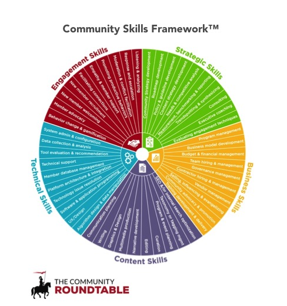

Session 1: 🚧 Community Narrative
I’ve learned that people will forget what you said, people will forget what you did, but people will never forget how you made them feel. - Maya Angelou
Key lessons
- Understanding your community’s narrative
- Identifying the main stakeholders who hold historical knowledge about the community
- Documenting the reason/purpose of the initial vision and where do the current stakeholders want to take the community
🖥 Part 1: Community and Community of Practice (CoP)
Example 1
_ In 2012 at an office party, two employees exchanged their interest in _ growing vegetables and flowers. They decided to set up an interest group who would like to exchange their tips, tricks and produce from their gardens/farms. Within a few months, they set up an Instagram to post pictures of their products to share online. Next year, more members joined them by renting an allotment near their office space and met after work to go to the allotment and grow vegetables together. Following summer, a few members wrote a proposal for their organisation to fund their group to pay for the allotment rent, purchase common tools and seeds and support their group to improve socialisation. Now, every year their organisation hosts a yearly harvest party where produce from the shared allotment is sold to the staff members to raise funds for a local charity. Their music band plays live music and a baking group shares free cakes and tea to engage more people at this event.
Example 2
_ In 2019, two employees exchanged their scientific goals for _ open science training for people in the biology field. They connected with another member who had a similar interest to write a proposal to join an accelerator programme and build a project that will allow them to train and mentor early career researchers in open science. Soon, they launched their programme and opened a call for experts in their area to join as mentors. In 2020, they received 20 applications from researchers interested in receiving training. The program’s success attracted 60 applications the next year and the previous trainees joined to mentor the next group. In 2021, they received grants to hire people, provide funding to their participants and scale their effort by offering this programme to people in other research fields. Now their trainees are not only mentors but also trainers of this programme in their network and frequently answer questions from new members.
Example 3
_ In 2018 at a Data Study Group workshop, two industry leaders, one from academia and one from the private sector, exchanged their interest in each other’s work _ in AI and Health Research. They went back to their organisations to find organisation buy-in to set a formal collaboration so that researchers across these organisations can collaborate on exciting and innovative ideas that advance each organisation’s mission and reputation as industry leaders. They invested funding to hire community managers and researchers to work in the interface of their organisation. Soon, they launched engagement initiatives and opened a call for experts in their area to apply for funding schemes on topics of shared interest. They were successful in their first year, and are excited about the possibility of the next 5 years.
Open discussions
- What trend do we see in these two scenarios?
- What are the differences?
Starting with “Why”?
- Why does the project need a community?
- Why did you take on this community role?
- Why would others join this community?
- How do these different sets of ‘purpose’ align?
Silent note-taking using prompts
1. Why does the project need a community?
- What is your community project’s story, who started it? Why is it important to build this community? - What is the purpose?
- Reflecting on the status of your project, where next do you want to take your community/project? What is the next step , and what resources do you need to make that happen?
2. Why do you or those who started the project care about community and community/your role? Why would others join this community?
- There will be a combination of multiple reasons why you or those leading the project chose to support the community and community management. Let’s start by sharing the reasons (from what you know about the project) that are most important to you?
- What is one of the most rewarding community experiences you have had? (one that made you feel included or valued for your contribution/participation!) – Reflecting on your experiences, why do you think people will join your community? What experience do you want them to have?
Aligning your community’s ‘purpose’ with the organisation’s motivation for community management

Reference: https://communityroundtable.com/what-we-do/models-and-frameworks/community-skills-framework/
- What skills and resources does your community have
- What skills and resources do the project team including you have
- What gaps exist - skills and resources do you and your team or community need
- What up-skilling for your community, you and your team will be needed
- Who from outside your community should be invited to fill those gaps
Knowing what you know through your responses to these prompts, what goals in your projects will you prioritise?
📝 Assignment:
1 - Community background← [MAKE A COPY]
Identify the origin story of the community that existed before you joined. Interview key stakeholders in your project to fill any gaps your narrative may have. This process will help identify your community’s mission, purpose and possible pathways you want to build.
📑 Reading recommendation:
- The Turing Way - Managing a new community: https://the-turing-way.netlify.app/collaboration/new-community.html
- Community Roundtable - Community Skills Framework: https://communityroundtable.com/what-we-do/models-and-frameworks/community-skills-framework/
🏡 Key takeaways
In this session, we discussed the concepts and purpose of community and community of practice mean.
We reflected on the following aspects: - Why it is important to start with “Why”, the original purpose of your community - Why did you or those who started the community care about community and community/your role - Why build a strong and authentics narrative for your community - reason why would others join this community - How to align your community’s ‘purpose’ with the organisation’s motivation for community management